Zoezi la sita=9lita2Kwa hiyo, mwanafunzi atakunywa lita 92za maziwa kwa siku sita.1.Eliudi alikuwa na magunia 20 ya ulezi. Ikiwa alimpa kaka yake 12 ya magunia hayo, je, kaka yake alipata magunia mangapi ya ulezi? 2.Nyumba ya kulala wageni ina vitanda 48. Iwapo 112 ya vitanda hivyo ni vya chuma, je, vitanda vingapi ni vya chuma? 3.Kangaroo alikimbia 13 ya umbali wa kilometa 15. Je, Kangaroo alikimbia umbali gani? 4.Shule ya msingi ilitarajia kuandikisha wanafunzi 160. Iwapo 78 ya wanafunzi waliandikishwa, je, wanafunzi wangapi hawakuandikishwa?5.Babu hunywa nusu lita ya maziwa kila siku. Je, Babu hunywa jumla ya lita ngapi za maziwa kwa wiki nne?Kugawanya sehemu kwa namba nzimaSehemu hugawanywa kwa namba nzima, kwanza kwa kubadili namba nzima kuwa sehemu na kubadili asili kuwa kiasi na kiasi kuwa asili. Kisha, zidisha sehemu kwa sehemu.